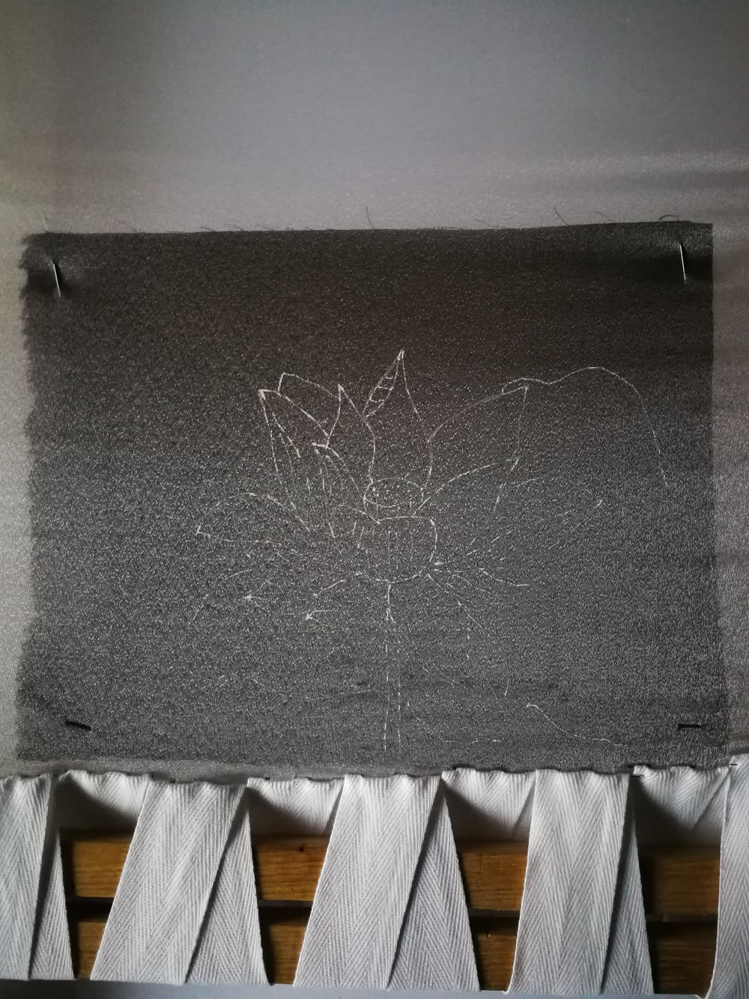
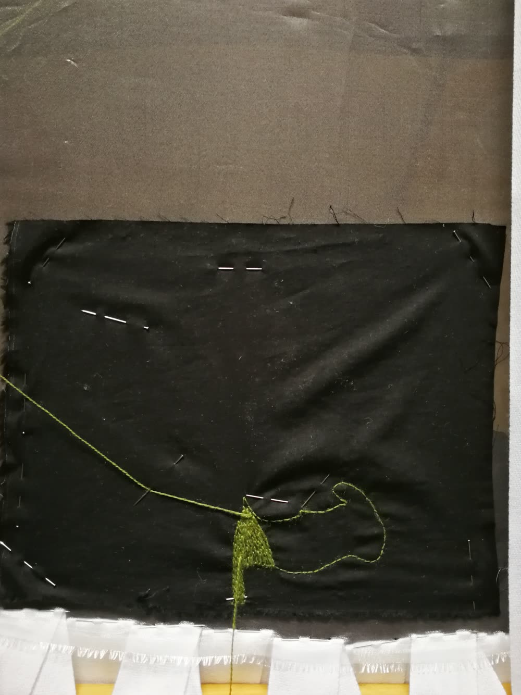
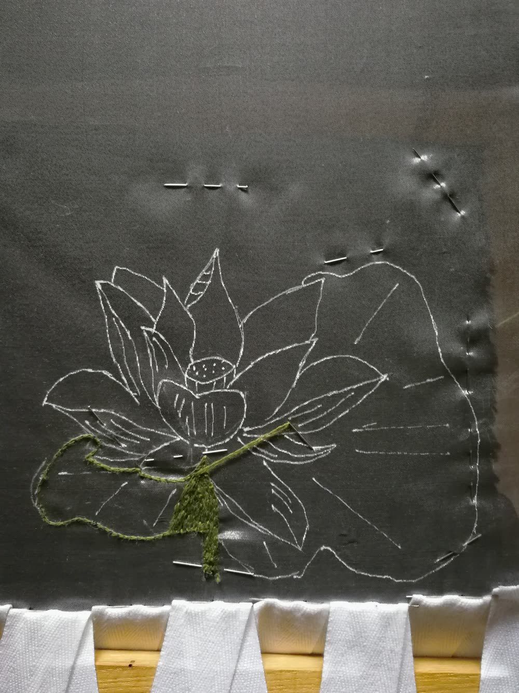
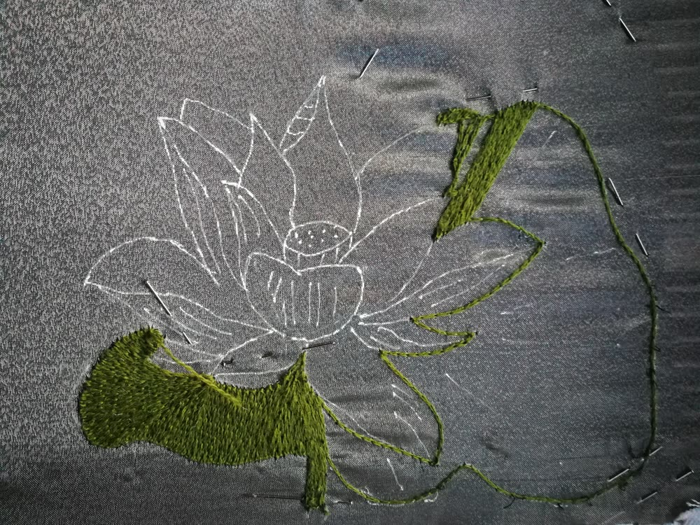
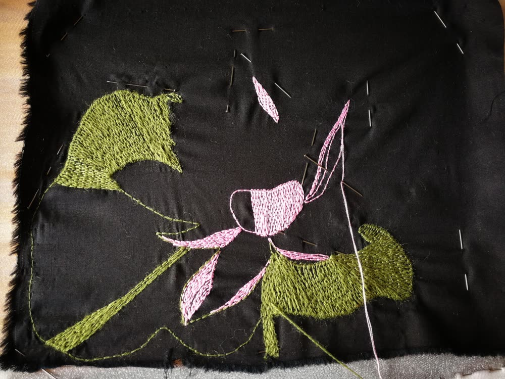
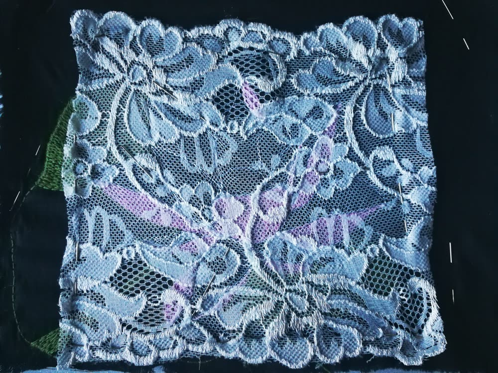
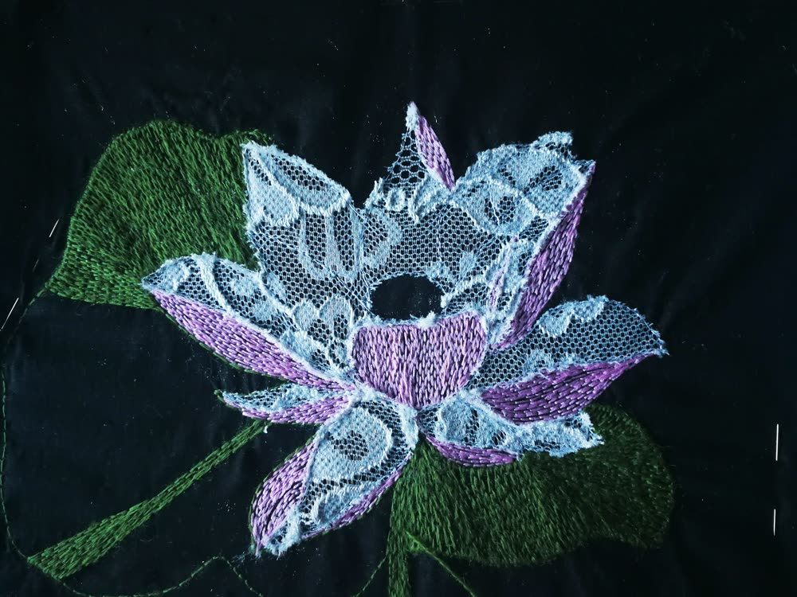
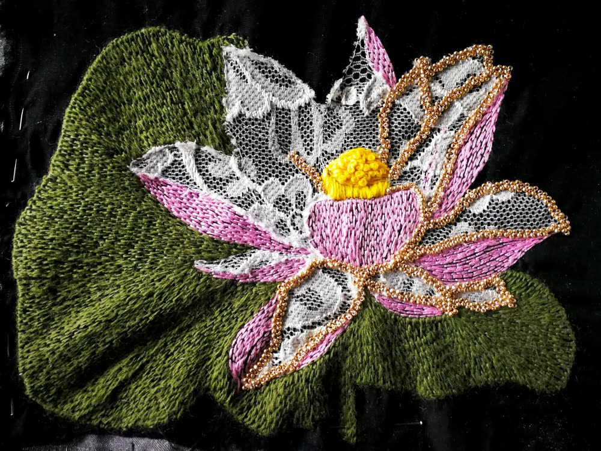

Hand Embroidered Lotus Flower Purse
I had been thinking about making a small purse for myself for some time, and I really enjoyed the time it took for the idea to grow. Here is my whole process, week by week, as a free step-by-step tutorial. My goal was to improve my satin stitch, or as some call it, thread painting with long and short stitch.

First shared on my old blog myEmbroideryPassions in 2021.
Week 1: Gather your materials & find your dream flower design
For the purse:
- zipper (25 cm)
- interlining (24 × 20 cm)
- outside fabric (24 × 20 cm)
- inside fabric (24 × 20 cm)
- fabric for a handle (26 × 6 cm)
Important: wash and iron your fabric before you sew it. If you don't, the fabric may get distorted after the first wash.
Tip for the size: I measured my old purse and adjusted the size, so the new one is big enough for my phone and wallet.
For the embroidery: a pattern (I drew my own lotus), a transfer pen, a needle, scissors, threads (DMC or any other), a frame or a hoop (I used my frame, but a hoop works too).
I like to use the Luneville hook on large areas: it covers them faster, and mistakes are easier to correct. Everything can be done with a needle too. Here is my basic Luneville embroidery project and the satin stitch tutorial.
Week 2: Transfer your pattern, choose your threads & start the lotus leaf
I put organza onto my frame, because I decided to do part of my embroidery with the Luneville hook. I transferred the pattern to the organza with a white roller.

I started with the lotus leaf. It is a very big leaf, so I embroidered it with satin stitch in the Luneville technique. Here is my front side…

… and here is my back side.

Week 3: Still working on the lotus leaf
It is a very big leaf, but with the Luneville technique my progress is much faster than with a needle.

Week 4: The lotus flower petals
I used the same technique for the flower. The outside of the petals is shaded, so I chose a 6-strand thread, Ljubica no. 538. If you embroider with the Luneville technique, cut a length you are comfortable working with.
- Pro tip 1: I use only 2 strands of a 6-strand thread for Luneville embroidery.
- Pro tip 2: with a needle you can use 6 or 4 strands. 6 strands give your lotus more texture, 4 strands a more delicate look.

Week 5: Lace on the lotus petals
I didn't quite know how to go on, and the answer came unexpectedly: I found a beautiful lace in my craft drawer. I carefully attached it over my embroidery and worked around the petals with small stitches. I used my Luneville hook, but you can get the same result with a needle.


- Pro tip 1: use sharp scissors for cutting lace.
- Pro tip 2: have good light, natural daylight is the best. Turn the piece around if you need to.
- Pro tip 3: take your time! Seriously, don't hurry. If you are in a hurry, do this step another time.
Week 6: Beads on the petal edges
I decorated the lotus petals with 15/0 Preciosa beads (and some 11/0). They are very small and look very delicate as an edge border. I sewed them on by hand, with a needle. It takes more time than I expected, so I put on nice music and sewed: it is like meditation time for me. Bead by bead :)

Week 7: Sewing the purse
I am a beginner when it comes to sewing, so I followed a clear sewing tutorial on YouTube, and everything went smoothly.
My cutest small purse is finished 💜 If you meet me, you will probably see me carrying it.
Have a question? Write to me on Instagram or at info@vesycreates.com.